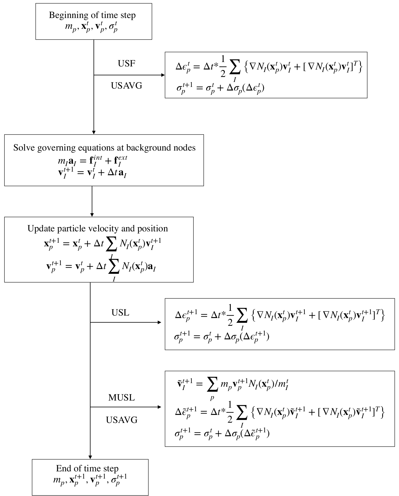

Welcome to learn MPM with Python
Contents
Welcome to learn MPM with Python#
This is a small sample book to give you a feel for material point method.
Material Point Method#
Material Point Method (MPM) is a particle based method that represents the material as a collection of material points, and their deformations are determined by Newton’s laws of motion. The MPM is a hybrid Eulerian-Lagrangian approach, which uses moving material points and computational nodes on a background mesh. This approach is very effective particularly in the context of large deformations.

Illustration of the MPM algorithm: (1) A representation of material points overlaid on a computational grid. Arrows represent material point state vectors (mass, volume, velocity, etc.) being projected to the nodes of the computational grid. (2) The equations of motion are solved onto the nodes, resulting in updated nodal velocities and positions. (3) The updated nodal kinematics are interpolated back to the material points. (4) The state of the material points is updated, and the computational grid is reset
MPM automatically satisfies the mass conservation by assigning a constant mass to each material point. The momentum balance is enforced in governing equations. However, Bardenhagen (2002) showed that the original MPM formulation does not satisfy the energy conservation explicitly. It was found that the energy conservation in MPM is strongly dependent on the two algorithms which are used to update the stress at material points.
One version of algorithm is to solve the constitutive relationships at the end of a numerical time step. This is called as USL (Update Stress Last). The other version of algorithm which is known as Update Stress First (USF) solves the constitutive equations at the beginning of numerical time step. The USF approach, however, has been found to have a slow increase of energy while the Modified Update Stress Last (MUSL) approach has shown a slow dissipation. Based on this observation, Nairn (2003) used a new algorithm known as USAVG (Update Stress Averaged) which combines both USF and MUSL. Figure illustrates the implementation of each version of stress update method within MPM algorithm.

Comparison of USF, USL, MUSL and USAVG. \(x\) is the position vector, \(v\) is the velocity, \(a\) is the acceleration, \(\varepsilon\) is the strain tensor and \(\sigma\) is the stress tensor. Subscripts, \(p\) and \(I\) represents values at material points and background nodes. \(\Delta t^* = \Delta t\) is the time step size for USF, USL and MUSL. For USAVG, \(\Delta t^* = \frac{1}{2} \Delta t\). (reproduced after Kularathna., 2018).
[1] Nairn, J. A. (2003). Material point method calculations with explicit cracks. Computer Modeling in Engineering and Sciences, 4(6), 649-664.
[2] Kularathna, S. (2018). Splitting solution scheme for material point method (Doctoral dissertation, University of Cambridge).